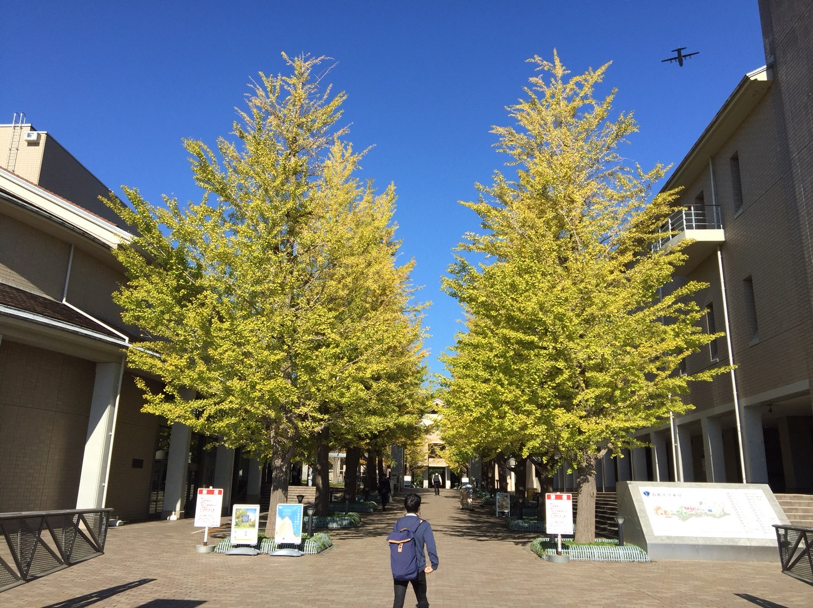

提供：写真部
利用には写真部の許可が必要です。
利用には写真部の許可が必要です。
新歓活動について
本学の課外活動団体が新歓活動において、遵守すべき事項は全て、 新歓ドキュメントにて掲載しています。 以下は、ドキュメントの中でも新入生に知ってほしいことや重要事項について記しています。
- 新入生が部活に参加する、部室に入る、部室を見学する、といったことが可能になるのは4/7(水)からです。
- ビラ配りについて
- 感染症対策のため、ビラ配りは日時を問わず全面禁止です。見学の際などにビラを渡すのは問題ありません。
- ビラ配りを見かけた場合は、中央新歓までご連絡ください。
- 掲示板の利用規則 を守ってください。
- 新入生に対する強制的な勧誘・学修番号や氏名の記入の強要は禁止です。
上に該当するような行為や質問がある場合は中央新歓までご連絡ください。また、怪しい団体が新歓をしているといったことも受け付けております。お気軽にご連絡いただけると幸いです。
Email: tyuushin [@] gmail.com
"["および "]"をとっていただきますようお願い申し上げます。